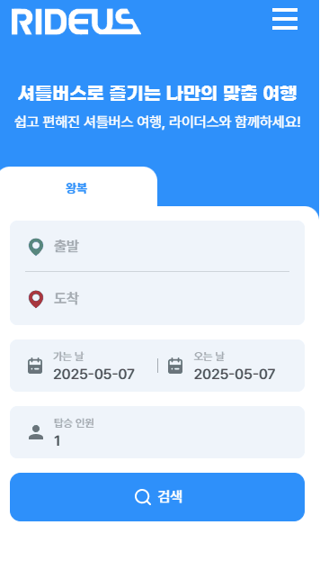
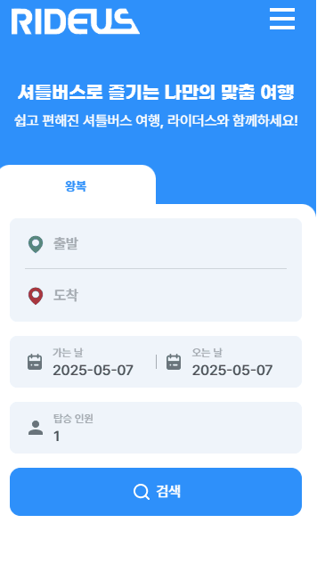
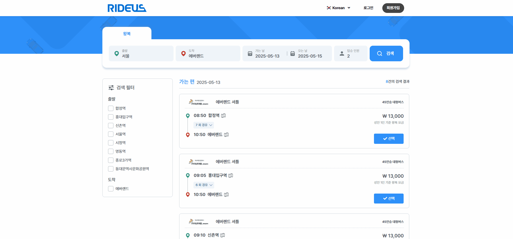
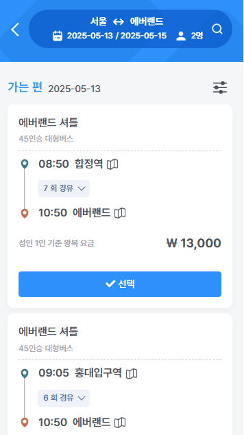

라이더스
https://rideus.net/-
기간
2023.08 - 2023.09
2023.11 - 2024.02 -
참여도
60%
-
담당
퍼블리싱 : 셔틀 예약 사이트의 메인 및 검색 결과 화면의 퍼블리싱을 단독으로 담당하며, PHP 연동 환경 속에서도 안정적이고 효율적인 UI 구조를 구현하였습니다.
사용스킬
HTML, SCSS, CSS, JQUERY, JAVASCRIPT, PHP
1프로젝트 개요
라이더스 셔틀버스 예약 사이트의 리디자인 프로젝트에 퍼블리싱 파트로 참여하였습니다. 셔틀 서비스 외 주요 사용자 화면(메인 및 검색 결과 리스트 페이지)의 퍼블리싱을 담당하였으며, 실제 운영되는 PHP 기반 시스템과 연동되는 구조에서 작업을 진행하였습니다.
2주요 구현 내용
 

기획/디자인 단계에서 요구한 사용자 흐름과 시각적 디테일을 면밀히 분석하여, 실제 구현 단계에서 이를 충실히 반영하고 완성도 높은 UI를 퍼블리싱으로 실현하였습니다.

퍼블리셔가 부재했던 기존 환경에서 Bootstrap 기반의 서치폼 레거시 코드를 전면 정리하고, 버튼·입력창 등 주요 요소를 컴포넌트화하였습니다. 디자인 시안에 맞춰 서치폼의 마크업 구조, SCSS 스타일, 인터랙션까지 일관성 있게 구현하였습니다.


기존 UI 구조를 분석한 뒤, 사용자 흐름에 최적화된 HTML/SCSS 구조로 재설계하였으며, PHP 개발자와의 협업을 통해 백엔드 출력 구조를 이해하고 마크업 변경에 신중하게 접근하여 구조 정합성을 확보하였습니다.
3작업 중 어려움 & 해결법
문제 퍼블리셔 부재 상태에서 개발자가 Bootstrap 기반으로 작성한 마크업과 클래스 네이밍이 일관되지 않아, PHP 출력 구조와 기존 마크업 간의 불일치로 인해 레이아웃이 깨지고 스타일이 적용되지 않는 문제가 발생하였습니다. 또한, 유지보수가 어려운 구조로 인해 새로운 UI 반영 시 혼란이 반복되는 상황이었습니다.
해결 전체 마크업 구조를 분석하고, 기획/디자인 요구사항에 맞춰 클래스 네이밍 규칙을 재정립하였습니다. Bootstrap 기반 코드에서 불필요하거나 충돌되는 부분을 제거하고, 버튼·입력창 등 주요 요소들을 SCSS 기반으로 컴포넌트화하여 스타일을 모듈화하였습니다. 이를 통해 스타일 일관성을 확보하고, 유지보수가 용이한 퍼블리싱 구조로 개선하였습니다.
4결과 및 성과
주요 사용자 페이지 리디자인 퍼블리싱을 안정적으로 구현하여 서비스 접근성과 UI 품질 향상에 기여
협업 기반 퍼블리싱 경험을 통해 개발 및 기획 단계와의 커뮤니케이션 능력 강화
복잡한 기술 스택 환경에서의 퍼블리싱 작업 경험 확보 및 호환성 대응 능력 향상
5링크